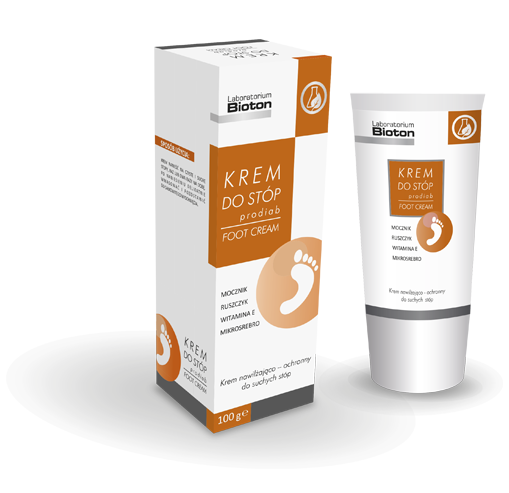

KREM DO STÓP prodiab
KREM DO STÓP prodiab przeznaczony jest do pielęgnacji suchej skóry stóp, skłonnej do rogowacenia i pękania. Zawarte w kremie składniki posiadają potwierdzoną badaniami skuteczność działania. Unikalne połączenie mocznika, ruszczyka, mikrosrebra oraz witaminy E sprawia, że KREM DO STÓP prodiab jest idealnym rozwiązaniem dla osób chcących zapobiec problemom zdrowotnym stóp. Polecany dla osób chorych na cukrzycę.
